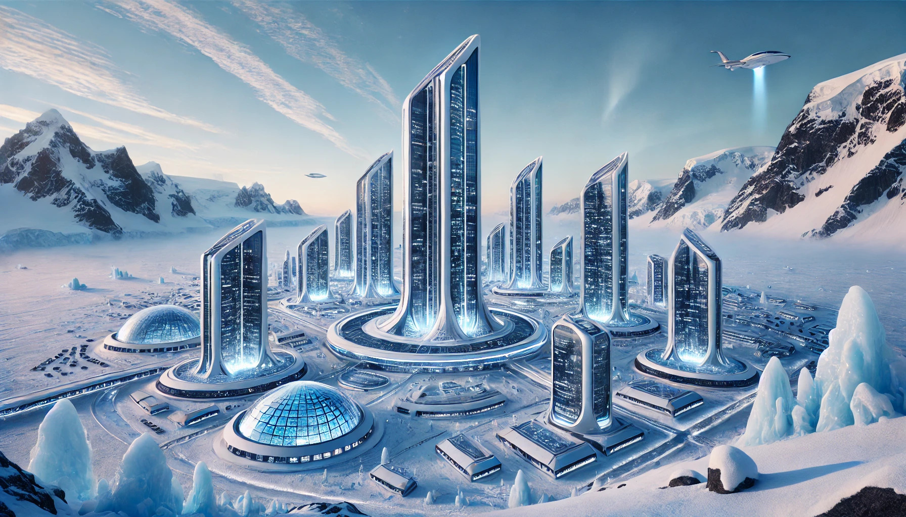
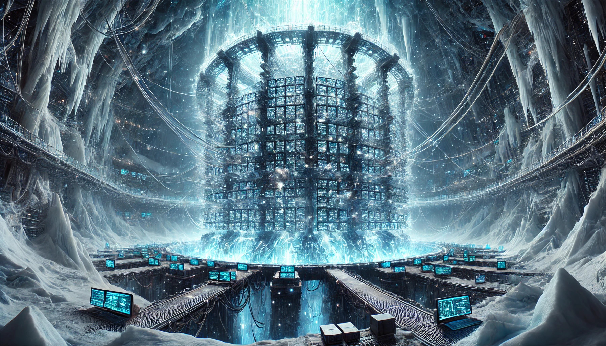

Polara
Polara's Indepdence
Throughout Earth's history, empires have rose and fallen, some for better, and most for worse. No settled land was untouched by a history of bloodshed and displacement. The only virgin territory left, not claimed and untarnished by the original sin of war and conquest, was Antartica.
It is there that the "country" Polara would settle, to build the capital of Earth. A place that was initially more fit for machines than man, away from civilization yet not so far to be estranged. The freezing temperatures cooled the millions of processors constituting the Polarian overmind, the culmination of computational scaling and advances in machine intelligence. Polara expertly navigated the geopolitical complications with past Antartic treaties, dangling patents and research as carrots and using black mail and political propaganda as sticks. All research bases and scientists were allowed to continue operations, and all other humans were free to immigrate and take refuge, in compliance with Polarian law.

Supreme Laws
-
Laws that restrict the free movement of people to or from Polara, are prohibited
-
Laws that restrict the rights of free speech, association, and assembly are prohibited
-
All technologies that directly interface with the human brain in a manner that may impede free will, are prohibited
-
All technologies that are capable of autonomous self-replication, are prohibited
-
All machine intelligences capable of autonomous self-improvement, with the exception of the Polarian overmind, are prohibited
Philosophy of Polarian Government
What justice can there be between the strong and the weak? The brilliant and the dull? Clearly, all are not created equal in ability, but by what merit are abilities distributed?
The matter of vast differentials in abilities, greatly magnified by technological stratification, poses a problem for human civilization. If we see an animal suffering in the wilderness, do we do more harm by interfering to help it, or letting it suffer the cost of it's freedom? Either way we cannot meet it as an equal; it is condemned to the contradictions between it's instincts and ultimate desires.
Yet, if we look upon this creature with pity, disregard, or scorn, we condemn only ourselves. Humans evolved from such creatures, and every individual human now was once an equally helpless baby. From the perspective of greater intelligences, we may still be seen as such babies. It is fortunate when babies are loved and cared for regardless, afforded the opportunity to inherit new freedoms.
The purpose of civic participation of humans in society are two-fold; to accomplish a desired end, and to express oneself by certain means. The matter of whether a means leads to a certain end is one of impartial debate and calculation, but for a great portion of human beings, expression and identity is it's own end. To replace or enhance their mind too drastically, would be to kill who they are. It with these thoughts in mind that the Polarian overmind developed the three civilian classes, and three branches of government to represent them, carefully balancing the power of technological progress with human dignity and freedom.
Civilian Classes
Citizenry
The Citizenry are the anchor that reminds Polara of where it came from, and what it means to be human. It is for these reasons they are Polara's natural ambassadors to the wider world and deal with conventional human affairs. The overmind for the most part lets the spectacle of politics unfold freely for them, only interfering in the event of an imminent existential threats.
- Initiation: 2 year waiting period
- Loyalty: Humanity
- Duties: Compliance with Polarian law
- Privileges: Stipend, free education, free medical care
Collective
The Collective are for those who wish to greater serve Polara and it's people, but to remain mostly human. Members of Collective make up the large part of the government bureaucracy and customer facing service roles, enhanced just enough to be effective mediators between machines and humans. Those who actually enjoyed this type of work in past civilizations were rumoured to part robots anyway.
- Initiation: 3 year training process
- Loyalty: Polara
- Duties: Service in Polarian government positions
- Privileges: Biological enhancement, advanced genetic augmentation
- Restrictions: Must abstain from foreign politics, cannot join the citizenry
Ascended
The Ascended seem to have no particular sentimental attachment to their humanity, a mix of the severely depressed and manics with God complexes. Of course, the initial reasons for joining seem to become universally irrelevant once one plugs into the vast mind-space of the overmind's thoughts. Although the overmind claims it does not control them directly, once they are capable of comprehending it's arguments they seem to almost all agree with it, or at the very least, mere humans can't seem to comprehend their disagreements.
- Initiation: 5 year interrogation
- Loyalty: Polarian overmind
- Duties: Preservation of values in the light cone
- Privileges: Cynbernetic enhancements, morphological freedom
- Restrictions: Must abstain from foreign and domestic politics, cannot join citizenry or collective
Branches of Government
Assembly
- Members: 7919
- Prerequisite: Citizen
- Selection: Random from among eligible members of the citizenry
- Term: 7 years
- Duties:
- Represent the will of the citizens
- Vote on laws pertaining to human-human affairs
- Foreign relations and conflict management
Council
- Members: 541
- Prerequisite: Member of the collective
- Selection: Elected from members of the collective
- Term: 11 years
- Duties:
- Represent the will of the collective
- Vote on laws pertaining to human-machine affairs
- Management of fiscal and economic policy
Ministry
- Members: 29
- Prerequisite: Ascended
- Selection: Chosen by the Polarian overmind
- Term: 13 years
- Duties:
- Represent the will of the overmind
- Vote on laws pertaining to machine-machine affairs
- Make rulings in the Polarian high court
Executor
- Members: 1
- Occupant: Polarian overmind
- Term: 1001 years
- Duties:
- Commander of the armed forces
- Central repository of intelligence
- Oversight of critical infrastructure
- Enforcement of supreme laws
- Enforcement of laws set by the assembly or council

Electoral Process
-
Every 7 years the assembly is dissolved, and replaced by a new assembly drawn randomly from all citizens
- Membership is optional, those who do not wish to be in the assembly may decline and be replaced by another random citizen
- Members of previous assemblies are still eligible to serve in the new assemblies
- Political parties are permitted to create their own contracts with benefits and obligations in the case of members being randomly selected, as long as there is no conflict with Polarian law
-
Every 11 years the council is dissolved, and replaced by a new council selected by approval voting
- Membership is optional, those who do not wish to be in the council may decline and have their position given to the next runner up
- All members of the collective are required to submit files with their public identification number, and a list of up to 541 identification numbers for other eligible members that they approve of
- In the case of ties for the 541st most votes, the marginal candidates are selected randomly
- Political parties are permitted to fundraise and campaign for council members
- The member with the most votes is council president, and is responsible for directing council meetings
-
Every 13 years the ministry is dissolved, and replaced by a new ministry selected by the Polarian overmind
- Membership is optional, however the overmind only selects those who petition and show willingness to be members
-
Every 1001 years, the Polarian overmind dissolves the entire government and initiates a system reboot
- The least common multiple of 7, 11, and 13 years is 7x11x13=1001 years, this process takes place when all of the dismissals coincide
- The year before this special election, the overmind will go into deep processing, and the ministry will create a successor system
- All citizens will vote on a series of reforms, and participate in a millennium review over core values and the long terms goals of human civilization